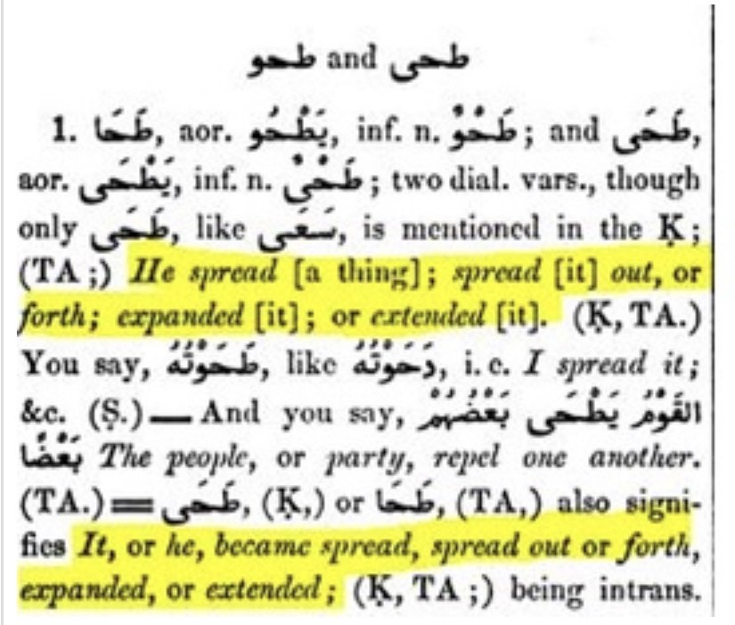
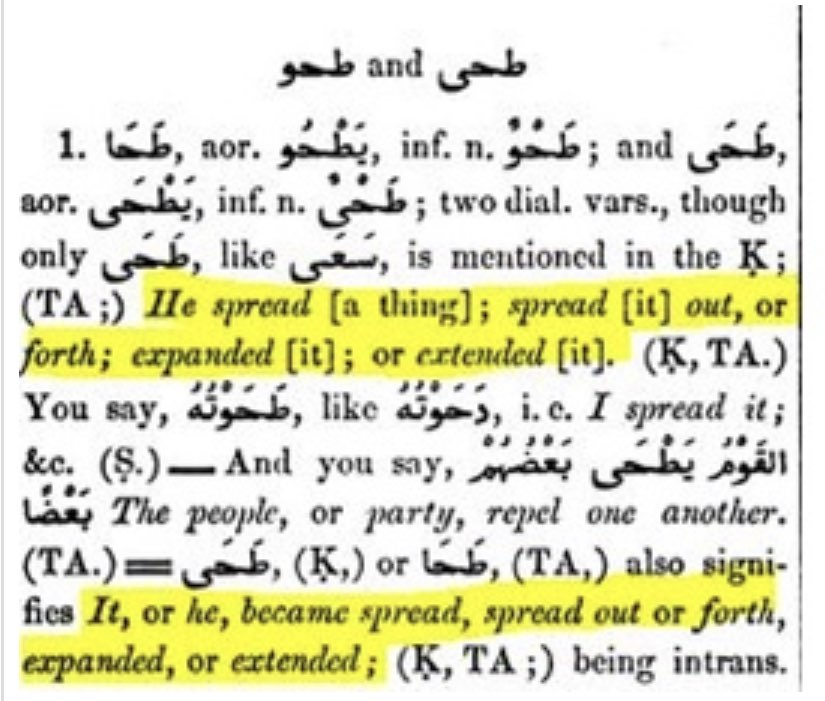

Many people like to claim Quran 88:20 proves earth is flat however is that true
Translation: “he made it spread and a lot of people used this as an argument for the earth not be spherical and
it is a weak (Da’iffff) argument, because if a ball (sphere 3D) was very big,every part of it is land would be flat
not zig zag like mountains 🔠if u go 2 verses before (88:17) you would see it is something visual”
-Source: Tafsir mafatih al-Ghayb or Al-Tafsir Al-Kabir Al-Razy volume 31 page number 145
The scholars are unanimously agreed that
the earth is round, but to human eyes it appears to be flat, because it is
very big and its roundness or curvature
cannot be seen at close distances. So the one
who stands and looks sees it as flat, but when
viewed as a whole, in reality it is round.
Ar-Raazi (may Allah have mercy on him) said:
If it is said: Do the words
"And the earth We spread out" indicate that
it is flat? We would respond: Yes,
because the earth, even though it is round, is an enormous sphere, and each little part of this enormous sphere,
when it is looked at, appears to be flat. As that is the
case, this will dispel what they mentioned of
confusion. The evidence for that is the verse in
which Allah, may He be exalted, says
(interpretation of the meaning): "And the
mountains as pegs" [an-
Naba' 78:7]. He called them awtaad (pegs)
even though these mountains may have
large flat surfaces. And the same is true in this
case.
Ibn Hazm (may Allah have mercy on him) said:
The proofs of the Qur'an and Sunnah indicate
that it is round.
Secondly:
The verse (interpretation of the meaning) "And
Allah has made for you the earth wide spread
(an expanse)" [Nooh 71:19] indicates that it is
spread out and shaped so that people can feel
settled in it and be able to live and prosper in it. Ibn Katheer said: That is, He spread it out,
prepared it, made it stable and made it firm
by means of the mountains.
Tafseer Ibn Katheer,
8/247 Similarly, the verse
(interpretation of the meaning) "Have We not
made the earth as a bed" [an-Naba' 78:6]
means that it is spread out and prepared for
you and for your benefit, so that you can cultivate it, build dwellings in it and travel through it.
Ibn Katheer said:
That is, it is prepared for people in such a way
that they can live in it, and it is firm, stable and
steady.
Tafseer Ibn Katheer,
8/307 And the verse
(interpretation of the meaning) "And the earth
We spread out, and placed therein firm
mountains, and caused to grow therein all kinds of things in due
proportion" [al-Hijr 15:19] means We spread it out and placed firm mountains therein. This is like the verse in
which Allah says (interpretation of the meaning): "And it is He Who spread out the earth, and placed
therein firm mountains and rivers" [ar-Ra'd 13:3]. There is no contradiction
between saying that it is round and saying that it was spread out, because in fact in its totality it is round,
but to the one who stands on it and
looks at it, it appears flat, as it appears to
everyone.
End quote from Tafseer ar-Raazi, 19/131
Shaykh ash-Shanqeeti
(may Allah have mercy on him) said:
If the scholars of Islam affirm that the earth is
round, then what would they say about the verse in which Allah, may He be exalted, says
(interpretation of the
meaning):
"Do they not look at the camels, how they are
created? And at the heaven, how it is raised?
And at the mountains,
how they are rooted and fixed firm?
And at the earth, how it is spread out?"
[al-Ghaashiyah
88:17-20].
So what the Quran means by the earth is
spread out is like lets say you climb a
mountain on you look down everything is flat
thats what the Qu'ran
Means
“There is consensus among the scholars, that the earth, with all its movements on land and sea, is like a ball.”
Source: Majmu’ Fatawa Shaykh Al-Islam Ahmad bin Taymiya. (Vol 25/pg 195)
Abu Muhammad Al-Juwayni stated that “the Earth is shaped like a watermelon”.
Source: Risalah fi Ithbat al-Istiwa wa al-Fawqiyya (pg 81-82)
Ibn baz states in majmu’ al-fatawa (9/228): “I have also proved in article that I got from scholars
like Ibn al-Qayim that points out to proves the roundess of the earth”
Sheikh Shanqiti, may Allah have mercy upon him said:
If the scholars of Islam affirm the roundness of the Earth, what do they then say about The Most High's saying:
"Or do they not observe the camels, how they were created?"
To his [other] saying: "And[do they not observe] at the Earth, how it was spread out?" ?
And their answers are like their answers upon The Most High's saying: " Until, when he reached the setting place
of the sun, he found it setting in a spring of black/hot muddy water", in other words, in sight of the eyes;
Because the sun sets for a people while continuing along the horizon for another people until its rising in the
East in the morning of the second day. And the spreading out of the Earth and its flatness, is visual, in every
region and part of it, due to its vastness and great magnitude.
And this does not contradict the reality of its shape; so we may see the towering mountain, but when we climb it
and reach it's peak, we find it as a flat surface and we find a people with all its effects. Some people in it
may not be aware about the rest of the world.
Thus, is the ending of "Adwā'ul Bayān"(427/8)
He (may Allah have mercy on him) was asked about two men who disputed about the nature of heaven and earth:
were they both round bodies? One of them said that they were, but the other denied that and said there is no
basis for that. What is the correct view?
He replied:
The heavens are round, according to the Muslim scholars. More than one of the scholars and Muslim leaders
narrated that the Muslims are unanimously agreed on that, such as Abu’l-Husayn Ahmad ibn Ja‘far ibn al-Munaadi,
one of the leading figures among the second level of the companions of Imam Ahmad, who wrote approximately four
hundred books. Consensus on this point was also narrated by Imam Abu Muhammad ibn Hazm and
Abu’l-Faraj ibn al-Jawzi. The scholars narrated that with well-known chains of narration (isnaads)
from the Sahaabah and Taabi‘een, and they quoted that from the Book of Allah and the Sunnah of His Messenger.
They discussed that in detail with orally-transmitted evidence. There is also mathematical evidence to that effect,
and I do not know of anyone among the well-known Muslim scholars who denied that, apart from a few of those who
engaged in arguments who, when they debated with the astrologers denied it for the sake of argument and said:
It may be square or hexagonal and so on. They did not deny that it could be round, but they said that the opposite
of that was possible. I do not know of anyone who said that it is not round – with any certainty –
apart from some ignorant people to whom no one pays any attention.
End quote from Majmoo‘ al-Fataawa (6/586)
Debunking the notion that the Quran says the Earth is flat
Credit to Quran and Bible Blog
Anti Islam Polemicists often appeal to certain verses and Arabic words to try and make the claim that the Quran says the Earth is flat.
The Arabic words and verses they appeal to are the following: 👇
‎فِرَاشًا (firāshan) – Quran 2:22
“Who has made the earth your couch…”
‎مَدَّ (madda) – Quran 13:3
“And it is He who spread out the earth…”
‎مِهَادًا (mihadan) – Quran 78:6
“Have We not made the earth as a wide expanse…”
â€Ø¯ÙØÙاهÙا (dahaha) – Quran 79:30
“And the earth, moreover, hath He extended (to a wide expanse);”
â€Ø³ÙØ·ÙØÙتْ (sutihat) – Quran 88:20
“And at the Earth, how it is spread out?”
â€Ø·ÙØÙاهÙا (tahaha) – Quran 91:6
“By the Earth and its (wide) expanse…”
——-
As we can see, each of these words refers to the action of “extending” or “spreading” the Earth.
Critics argue that this somehow proves
that the Earth is flat, at least according to the Quran. So let us look at what the lexicons say about the matter.
We will be citing the
authoritative Lane’s Lexicon for the meaning of these words in their proper context.
http://www.tyndalearchive.com/TABS/Lane//
But before we do that, it is also important to consider the meaning of another Arabic word and its variants:
‎الْأَرْضَ (arda)
This word literally means either the planet Earth or simply the ground (earth) upon which we walk, travel or use as a place of rest.
Here is what Lane’s Lexicon states:
This dual meaning will be important, as we will see.
Let us now analyze the six Arabic words that critics use in their polemical arguments:
‎فِرَاشًا (firāshan)
According to Lane’s Lexicon, the definition of this word is:
“[a] thing that is spread upon the ground…”
More importantly, with regards to its usage in Quran 2:22, the word refers to the Earth as a:
“a thing that is spread for one to sit or lie upon…”
This is why Yusuf Ali translated the word as “couch”, whereas others translated it as either “bed” or “resting place”.
Here is a screenshot of Lane’s Lexicon:
But to Anti Islam Polemicists, this somehow proves that the Earth must be flat. Well, not really
ecause no one would argue that people do not use the ground to sit or lie upon. That is all the verse is saying!
And remember, the Arabic word for “earth” can mean both planet Earth or simply the ground.
‎مَدَّ (madda)
According to Lane’s Lexicon, the definition of this word is to “spread” or “stretch out” and to make “plain,
or level, the earth”:
As shown, the word can be used to mean “stretching” other things as well, such as “shade”.
Indeed, the word is also used in the Quran to refer to the “stretching” of a “shadow”
👇
“Hast thou not turned thy vision to thy Lord?- How He doth prolong the shadow!”
(Quran 25:45)
As for the meaning of “stretching†of the Earth, the word only refers to making the ground level. According to Ibn Kathir,
the meaning is that Allah (Glorified and Exalted be He)
has made the earth “…spacious in length and width.”
long link
So again, we see nothing here about the shape of the planet Earth. It is simply a reminder of how God has made it “spacious†for people.
Finally, The Study Quran commentary on Surah 13:3 is quite interesting. It states:
“[a]ccording to Ibn Juzayy, [the verse] may appear to suggest that the earth is flat and not, as was widely acknowledged in his time, round.
For him, however, the verse speaks of the earth as spread out because of the fact that every portion of land on earth, although flat from our perspective,
comprises a greater whole, namely, the surface of the earth, which is round.”
— The Study Quran: A New Translation and Commentary, ed. Seyyed Hossein Nasr (New York: HarperOne, 2015), p. 616.
‎مِهَادًا (mihadan)
According to Lane’s Lexicon, this word means any place for sleeping (like a cradle) that is
“made plain, even, or smooth”. Similarly, when applied to the ground or “earth”, it means:
“…a plain, an even, or a smooth expanse…”
Moreover, when used in Quran 78:6, it means that the earth was:
“…adapted to be travelled over.”
A similar word is used in Quran 43:10 and means the same thing:
“(Yea, the same that) has made for you the earth (like a carpet) spread out, and has made for you roads
(and channels) therein, in order that ye may find guidance (on the way);”
Alternate translations use the word “cradle” as well(See The Study Quran, op. cit., p. 1191.)
According to The Study Quran, this verse was interpreted by scholars like Ibn Kathir and Al-Razi as meaning that
the earth was made “easy to travel” (Ibn Kathir) or “tractable for agriculture” (Al-Razi) or “a home for human life”.
So, would anyone argue that the earth has not been made as an “expanse” to be “travelled over” or to be used for agriculture?
Of course not! Critics once again misinterpreting the word as if it is somehow referring to the shape of the planet.
Rather, the Quran is referring to the ground and how it has been made “level” so that mankind can use it for resting and travelling.
It is simply reminding mankind of the blessings they enjoy, which they can easily witness themselves.
——-
â€Ø¯ÙØÙاهÙا (dahaha)
According to Lane’s Lexicon, this word also means to:
“…spread out, or forth; expanded; or extended…”
When referring to “earth”, it means that God made it:
“…wide, or ample…”
 Again, would anyone argue that the earth is not “wide†or “ample� There are currently almost 8 billion
people on the entire planet, so clearly it is very “wide” and “ample”!
———
â€Ø³ÙØ·ÙØÙتْ (sutihat)
According to Lane’s Lexicon, the root of this word again means to “spread” or “expand”.
So once again, the word is simply referring to the earth being expanded to provide ample space for mankind.
It is not referring to the shape of the entire planet. As The Study Quran commentary states, “spread out†means:
“…in such a way that human beings derive many benefits from it.”
——-
â€Ø·ÙØÙاهÙا (tahaha)
Finally, this word, like the others, also means simply to “spread”, “expand” or “extend”.

So, based on what we have seen, the use of these words was not meant as a reference to the shape of the Earth.
Whenever these words are used in the Quran, the context is in the sense of something the reader can witness himself.
The Quran refers to how the earth has been “spread” and “expanded” so that mankind can use the ground to sit on, to sleep on and to travel on.
None of these verses can be used to pontificate on the shape of the entire planet. But there are other verses that can.
Let us discuss these now.
——-
The Actual Shape of the Earth in the Quran
There are some words used in the Quran that seem to suggest the shape of the planet Earth. Quran 39:5, uses one such word:
“He created the heavens and the earth in true (proportions): He makes the Night overlap [يُكَوِّرُ – yukawwiru] the Day,
and the Day overlap the Night: He has subjected the sun and the moon (to His law): Each one follows a course for a time appointed.
Is not He the Exalted in Power – He Who forgives again and again?”
(Quran 39:5)
Let us see what this word means. According to Lane’s Lexicon, the word means to “wound”, especially in a “round form”,
like winding a turban around one’s head.
A similar word is used in Quran 81:1, in reference to the sun (which any observer can see is round):
‎إِذَا الشَّمْسُ كُوِّرَتْ
“When the sun is wrapped up [in darkness]”
(Quran 81:1)
The word of interest is كُوِّرَتْ “kuwwirat”, the meaning of which Lane’s Lexicon explains is:
“[w]hen the sun shall be wound round [with darkness] like a turban…”
So we can see that this word conjures up the image of something being “wound†in a spherical or “round†form. So when the word is used in Quran 39:5,
it similarly conjures up the image of the “night†being “wound†around the day (and vice versa). Thus, since it is used with regards to the sun,
which is round, we can similarly conclude that when the “night” overlaps the “day”, the planet Earth (which both envelop) would have to be round as well.
In fact, this verse was used by classical scholars such as Ibn Hazm to conclude that the Earth was indeed round: 👇
https://islamqa.info/en/answers/118698/consensus-that-the-earth-is-round
”But what about scholars and Muslims in the past that did believe in a flat earth?”
👇
https://sapienceinstitute.org/does-the-quran-say-the-earth-is-flat/
long link
The Qur’ān is a timeless, multi-layered and multi-levelled book.1 The Qur’ān’s verses pertaining to natural phenomena can have a multiplicity of readings.
These verses have many layers of meaning that can be understood by people with different levels of understanding.2 Each layer of meaning can be made sense
of by people of varying ages, at different stages of intellectual advancement. The layers of meaning are not just restricted to scientific truths, rather
they can refer to spiritual, existential, and moral truths. Mustansir Mir similarly reasons:
“From a linguistic standpoint, it is quite possible for a word, phrase or statement to have more than one layer of meaning, such that one layer would make
sense to one audience in one age and another layer of meaning would, without negating the first, be meaningful to another audience in a subsequent age.”3
The multiplicity of readings approach makes sense of the Qur’ānic objectives of the verses that refer to natural phenomena. Their main objectives are to engage
the reader to reflect on the natural world and to realise the maximal perfection of God’s creative power and wisdom; leading to the conclusion that God is one
and that He alone is worthy of worship.4 The meanings of the verses can make sense to people across every era whilst fulfilling the main objectives of these verses,
irrespective of their level of understanding. This approach will be explicated and detailed in a forthcoming Sapience Institute publication, God-willing.
With the multiplicity of readings approach being considered, the question of whether the Qur’ān postulates the earth is flat can be addressed in a comprehensive
way. The following verses, and similar verses, have been cited by detractors to substantiate their claim that the Qur’ān says the world is flat:
“[It is He] who has made for you the earth as a bed [spread out] and inserted therein for you roadways and sent down from the sky, rain and produced thereby
categories of various plants.”5
“He created the heavens and the earth for a purpose. He wraps (yukawwiru) the night around the day, and wraps the day around the night. And He has
subjected the sun and the moon,
each orbiting for an appointed term. He is truly the Almighty, Most Forgiving.”6
The first thing to appreciate is that these verses, and ones similar to them, have layers of meaning that can relate to the readers’ context. For instance,
a 7th century Arab bedouin,
who may have believed that Earth was flat, would make perfect sense of these verses in a way that aligns with their level of understanding. An Arab Bedouin
would understand
the first verse as referring to the flatness of the earth in that it does not have many craters, and that there are many flat planes in order to live and grow
fruits and vegetation.
The second verse would also make sense to him as he observes the night changing into the day.
These above verses, however, do not necessarily contradict the rotundity of the earth. The first verse, and similar verses, can obviously be understood from a
phenomenological perspective;
that is, the perspective of the first-person experience. This is in perfect harmony with God asking people to see and observe from their own perspective. For the
human walking and living on earth,
his or her experience is such that the earth has been spread out, which facilitates their existence. Classical exegete Ibn Kathir explains that it means that it is
spread out for human use, including cultivation,
travel and construction, as well as other benefits.7
Before discussing the second verse it is important to note that, contrary to the majority of Greek philosophers, the ancient Romans
had established the view that the Earth was flat.
There may have been some Roman philosophers that thought otherwise, however, this was the majority view. Dino Boccaletti has shown that in the Roman world
the notion of a spherical Earth was unpopular;
later on the Christian Church exacerbated this, by making it more difficult for people in the Roman Empire to accept a spherical Earth.8 Contrastingly,
and as will be explicated below, the majority of Islamic
scholarship rejected the predominant Roman understanding that the Earth was flat. This rejection was strongly grounded in the Qur’ān.
The second verse, in chapter 39, has a meaning that can make sense of the roundness of the earth. The Arabic word yukawwiru (rolling/wrap) makes sense of
something being rolled over a spherical surface; in this case,
rolling the night into the day.9 This choice of word is interesting as the word yukawwiru is linguistically related to the Arabic word for ball. This the view of
the 11th century scholar Ibn Hazm.10 Ibn Hazm argues that
yukawwiru linguistically relates to the word used for wrapping a turban on one’s head; which indicates the earth is spherical as the night and day wrap themselves
“around” the earth. Dr. Raghib Al-Sarjani points out that
Muslim scholars were motivated to reject the Roman flat-Earth view, and instead championed the spherical Earth view because the Qur’ān describes the Earth as spherical.11
The Arabic lexicon, Lane’s Lexicon, echoes Dr. Al-Sarjani and Ibn Hazm’s view by explaining that the root letters for yukawwiru (كور) can mean to wrap around,
like wounding a turban on someone’s head or wounding something
in a round form. The root letters are usually used in the context of round things like a head, turban, bee-hive, etc.:
“He wound round the turban upon his head… and hence you say he wound the thing in a round form.”12
The word in chapter 39 is also used in chapter 81, verse 1:
“When the Sun is wrapped up [in darkness].”
Lane’s Lexicon explains that the use of the same word in this verse can mean:
“or shall have its light collected together and wrapped up like [emphasis is mine] a turban.”13
What is significant to note here is that the lexicon is comparing the wrapping or unwrapping of a turban with the wrapping of the Sun (and the Sun is visibly spherical).
The specific reference to a turban is not being used to refer to the abstract act of wrapping. Rather it is comparing the wrapping of the spherical Sun with the wrapping
of the turban on a head, which also happens to be spherical. It would be unreasonable to argue that when one refers to the wrapping of a turban it can also normally refer
to the wrapping of a turban on a block or plank of wood. The wrapping or unwrapping of a turban is done on a human head, and human heads (especially the area where the turban sits on)
are generally spherical. The lexicon’s comparison above further indicates that the word can refer to wrapping over a spherical or round thing.
Even if the turban was used in reference to just the act of wrapping, the above comparison can also facilitate the view that it can mean wrapping over a round object.
Interestingly, 14th century scholar (8th century after hijrah; A.H.)14 Ibn Taymiyya cites an earlier authority, Abu’l-Husayn Ibn Munāda, as referring to the Earth as a ball:
“There is consensus among the scholars, that the earth, with all its movements on land and sea, is like a ball.”15
Ibn Munāda’s view is supported by Ibn Hazm who also stated there is a consensus that the Earth is spherical.16
Many other scholars have explicated the above view. 11th century scholar (5th century A.H.) Abu Muhammad Al-Juwayni stated that the Earth is shaped like a watermelon.17 Abu Hamid Al-Ghazali,
who lived in the same century, went so far as to say that anyone who denies that the Earth is spherical has made a mockery of Islam.18 12th century (6th century A.H.) scholar Abu Faraj Ibn Al-Jawzi
stated that there is a consensus (ijma’) among Muslim scholars that the Earth is spherical.19
It is significant to note that the first three centuries in Islam have a special place for all Muslims. Prophet Muhammad ﷺsaid, “The best people are those of my generation,
then those who come after them, then those who come after them.”20 The scholastic rejection of the flat Earth thesis, and the championing of the spherical Earth thesis, occurred in the first three
generations of Islam; the best people. Some examples include Ibn Khardādhaba (d. 272 A.H.) who stated that the Earth resembles an egg-yolk
shape and Ibn Rustah (d. 290 A.H.) who stated that the Earth
is spherical like a ball.21
In summary, the majority of Islamic scholars maintained that Earth was round and this view has a strong Qur’ānic basis. However, the verses pertaining to the earth can be understood
in a way that supports the flatness of the earth as well as its roundness. Irrespective of the understanding of the reader or listener,
their reflection on the earth and the alternation of the night
and day will facilitate the conclusion of the majesty of God’s creative power and the fact that the manifestation of His creative attributes is worthy of praise, thus the primary purpose of the
verses is fulfilled.
The multiplicity of readings approach opens the door to the conclusion
that the Qur’ān’s verses have layers of meaning that make sense to people with a primitive and a more advanced understanding,
whilst ensuring the objectives of the verses are met. This timeless nature
of the Qur’ān is one of its remarkable features.
References
1 S. H. Fatih provided scholastic references and important additions and edits to this work. Mohammed Hijab also provided the inspiration for this piece with his Sapient
Thoughts video on the topic: https://www.youtube.com/watch?v=RH9zhfpmpzE. Their valuable input is appreciated.
2 Guessoum, N. (2008), The Qur’an, Science, and the (related) contemporary Muslim Discourse. Zygon®, 43: 411-431. https://doi.org/10.1111/j.1467-9744.2008.00925.x; Guessoum,
N. (2011) Islam’s Quantum Question: Reconciling Muslim Tradition and Modern Science. I. B. Tauris.
3 Mir, M. (2004). Scientific exegesis of the Qur’an – a viable project? Islam & Science, 2(1), 33.
https://link.gale.com/apps/doc/A119627485/AONE?u=anon~25f3331e&sid=googleScholar&xid=4650c243.
4 Akhtar, Shabbir. (2008) The Qur’ān and the Secular Mind: A Philosophy of Islam. Routledge; Dallal, Ahmad. “Science and the Qur’ān.” Encyclopaedia of the Qur’ān. General Editor:
Jane Dammen McAuliffe, Georgetown University, Washington DC. Brill Online, 2013. http://referenceworks.brillonline.com/entries/encyclopaedia-of-the-quran/science-and-the-quran-SIM_00375
5 The Qur’ān, Chapter 20, Verse 53
6 The Qur’ān, Chapter 39, Verse 5
7 Ibn Kathir. (2010). Tafsir Al-Quran Al-‘Athīm. Dammam: Dar Ibn Jawzi, vol. 5, p. 293.
8 Boccaletti, D. (2019). The Shape and Size of the Earth: A Historical Journey from Homer to Artificial Satellites. Cham, Switzerland: Springer, p. 185.
9 Lane, William Edward. (1863) An Arabic-English Lexicon, Book I. London: Williams & Norgate, p. 2637. http://lexicon.quranic-research.net/.
10 Ibn Hazm. (1996). Kitāb al-Fiṣal fī al-Milal wa-al-Ahwāʼ wa-al-Niḥal. Beirut: Dar Al-Jīl, vol. 2, p. 241. His relevant chapter is entitled, “The Earth is Ball Shaped”.
11 Sarjāni, Al-. Raghib. (2010). Matha Qaddama al-Muslimūn lil ‘Ālam? Cairo: Muassasat Iqra, vol. 1, p. 284.
12 Lane, William Edward. (1863) An Arabic-English Lexicon, Book I. London: Williams & Norgate, p. 2637. http://lexicon.quranic-research.net/.
13 Ibid.
14 After hijrah (AH) is the era used by the Islamic calendar. It is a lunar-based calendar that began in 622 CE; the year Prophet Muhammad ﷺ and his companions migrated from Mecca to Medinah.
15 Ibn Taymiyya. (2004). Majmū’ Fatāwa Shaykh Al-Islam Ahmad b. Taymiya. Medina: Saudi Ministry of Islamic Affairs, Dawah and Guidance, vol. 25, p. 195.
After hijrah (AH) is the era used by the Islamic calendar.
It is a lunar-based calendar that began in 622 CE; the year Prophet Muhammad ﷺ and his companions migrated from Mecca to Medinah.
16 Ibn Hazm. (1996). Kitāb al-Fiṣal fī al-Milal wa-al-Ahwāʼ wa-al-Niḥal. Beirut: Dar Al-Jīl, vol. 2, pp. 241-255.
17 Juwayni, Al-. A. M. (1998). Risālah fi Ithbāt al-Istiwā wa al-Fawqiyya. Riyadh: Dar Tuwayq, pp. 81-82.
18 Ghazali, Al-. A. H. (2007). Tahāfut al-Falāsifa. Cairo: Dar Al-Ma’ārif, p. 80.
19 Ibn Al-Jawzi, A. F. (1995). Al-Muntadham fi Tarīkh al-Mulūk wa al-Umam. Beirut: Dar al-Kutub al-‘Ilmiya, vol. 1, p. 184.
20 Narrated by Bukhari, no: 6065 and Muslim, no: 2533.
21 Sarjāni, Al-. Raghib. (2010). Matha Qaddama al-Muslimūn lil ‘Ālam? Cairo: Muassasat Iqra, vol. 1, p. 284.
Again, would anyone argue that the earth is not “wide†or “ample� There are currently almost 8 billion
people on the entire planet, so clearly it is very “wide” and “ample”!
———
â€Ø³ÙØ·ÙØÙتْ (sutihat)
According to Lane’s Lexicon, the root of this word again means to “spread” or “expand”.
So once again, the word is simply referring to the earth being expanded to provide ample space for mankind.
It is not referring to the shape of the entire planet. As The Study Quran commentary states, “spread out†means:
“…in such a way that human beings derive many benefits from it.”
——-
â€Ø·ÙØÙاهÙا (tahaha)
Finally, this word, like the others, also means simply to “spread”, “expand” or “extend”.

So, based on what we have seen, the use of these words was not meant as a reference to the shape of the Earth.
Whenever these words are used in the Quran, the context is in the sense of something the reader can witness himself.
The Quran refers to how the earth has been “spread” and “expanded” so that mankind can use the ground to sit on, to sleep on and to travel on.
None of these verses can be used to pontificate on the shape of the entire planet. But there are other verses that can.
Let us discuss these now.
——-
The Actual Shape of the Earth in the Quran
There are some words used in the Quran that seem to suggest the shape of the planet Earth. Quran 39:5, uses one such word:
“He created the heavens and the earth in true (proportions): He makes the Night overlap [يُكَوِّرُ – yukawwiru] the Day,
and the Day overlap the Night: He has subjected the sun and the moon (to His law): Each one follows a course for a time appointed.
Is not He the Exalted in Power – He Who forgives again and again?”
(Quran 39:5)
Let us see what this word means. According to Lane’s Lexicon, the word means to “wound”, especially in a “round form”,
like winding a turban around one’s head.
A similar word is used in Quran 81:1, in reference to the sun (which any observer can see is round):
‎إِذَا الشَّمْسُ كُوِّرَتْ
“When the sun is wrapped up [in darkness]”
(Quran 81:1)
The word of interest is كُوِّرَتْ “kuwwirat”, the meaning of which Lane’s Lexicon explains is:
“[w]hen the sun shall be wound round [with darkness] like a turban…”
So we can see that this word conjures up the image of something being “wound†in a spherical or “round†form. So when the word is used in Quran 39:5,
it similarly conjures up the image of the “night†being “wound†around the day (and vice versa). Thus, since it is used with regards to the sun,
which is round, we can similarly conclude that when the “night” overlaps the “day”, the planet Earth (which both envelop) would have to be round as well.
In fact, this verse was used by classical scholars such as Ibn Hazm to conclude that the Earth was indeed round: 👇
https://islamqa.info/en/answers/118698/consensus-that-the-earth-is-round
”But what about scholars and Muslims in the past that did believe in a flat earth?”
👇
https://sapienceinstitute.org/does-the-quran-say-the-earth-is-flat/
long link
The Qur’ān is a timeless, multi-layered and multi-levelled book.1 The Qur’ān’s verses pertaining to natural phenomena can have a multiplicity of readings.
These verses have many layers of meaning that can be understood by people with different levels of understanding.2 Each layer of meaning can be made sense
of by people of varying ages, at different stages of intellectual advancement. The layers of meaning are not just restricted to scientific truths, rather
they can refer to spiritual, existential, and moral truths. Mustansir Mir similarly reasons:
“From a linguistic standpoint, it is quite possible for a word, phrase or statement to have more than one layer of meaning, such that one layer would make
sense to one audience in one age and another layer of meaning would, without negating the first, be meaningful to another audience in a subsequent age.”3
The multiplicity of readings approach makes sense of the Qur’ānic objectives of the verses that refer to natural phenomena. Their main objectives are to engage
the reader to reflect on the natural world and to realise the maximal perfection of God’s creative power and wisdom; leading to the conclusion that God is one
and that He alone is worthy of worship.4 The meanings of the verses can make sense to people across every era whilst fulfilling the main objectives of these verses,
irrespective of their level of understanding. This approach will be explicated and detailed in a forthcoming Sapience Institute publication, God-willing.
With the multiplicity of readings approach being considered, the question of whether the Qur’ān postulates the earth is flat can be addressed in a comprehensive
way. The following verses, and similar verses, have been cited by detractors to substantiate their claim that the Qur’ān says the world is flat:
“[It is He] who has made for you the earth as a bed [spread out] and inserted therein for you roadways and sent down from the sky, rain and produced thereby
categories of various plants.”5
“He created the heavens and the earth for a purpose. He wraps (yukawwiru) the night around the day, and wraps the day around the night. And He has
subjected the sun and the moon,
each orbiting for an appointed term. He is truly the Almighty, Most Forgiving.”6
The first thing to appreciate is that these verses, and ones similar to them, have layers of meaning that can relate to the readers’ context. For instance,
a 7th century Arab bedouin,
who may have believed that Earth was flat, would make perfect sense of these verses in a way that aligns with their level of understanding. An Arab Bedouin
would understand
the first verse as referring to the flatness of the earth in that it does not have many craters, and that there are many flat planes in order to live and grow
fruits and vegetation.
The second verse would also make sense to him as he observes the night changing into the day.
These above verses, however, do not necessarily contradict the rotundity of the earth. The first verse, and similar verses, can obviously be understood from a
phenomenological perspective;
that is, the perspective of the first-person experience. This is in perfect harmony with God asking people to see and observe from their own perspective. For the
human walking and living on earth,
his or her experience is such that the earth has been spread out, which facilitates their existence. Classical exegete Ibn Kathir explains that it means that it is
spread out for human use, including cultivation,
travel and construction, as well as other benefits.7
Before discussing the second verse it is important to note that, contrary to the majority of Greek philosophers, the ancient Romans
had established the view that the Earth was flat.
There may have been some Roman philosophers that thought otherwise, however, this was the majority view. Dino Boccaletti has shown that in the Roman world
the notion of a spherical Earth was unpopular;
later on the Christian Church exacerbated this, by making it more difficult for people in the Roman Empire to accept a spherical Earth.8 Contrastingly,
and as will be explicated below, the majority of Islamic
scholarship rejected the predominant Roman understanding that the Earth was flat. This rejection was strongly grounded in the Qur’ān.
The second verse, in chapter 39, has a meaning that can make sense of the roundness of the earth. The Arabic word yukawwiru (rolling/wrap) makes sense of
something being rolled over a spherical surface; in this case,
rolling the night into the day.9 This choice of word is interesting as the word yukawwiru is linguistically related to the Arabic word for ball. This the view of
the 11th century scholar Ibn Hazm.10 Ibn Hazm argues that
yukawwiru linguistically relates to the word used for wrapping a turban on one’s head; which indicates the earth is spherical as the night and day wrap themselves
“around” the earth. Dr. Raghib Al-Sarjani points out that
Muslim scholars were motivated to reject the Roman flat-Earth view, and instead championed the spherical Earth view because the Qur’ān describes the Earth as spherical.11
The Arabic lexicon, Lane’s Lexicon, echoes Dr. Al-Sarjani and Ibn Hazm’s view by explaining that the root letters for yukawwiru (كور) can mean to wrap around,
like wounding a turban on someone’s head or wounding something
in a round form. The root letters are usually used in the context of round things like a head, turban, bee-hive, etc.:
“He wound round the turban upon his head… and hence you say he wound the thing in a round form.”12
The word in chapter 39 is also used in chapter 81, verse 1:
“When the Sun is wrapped up [in darkness].”
Lane’s Lexicon explains that the use of the same word in this verse can mean:
“or shall have its light collected together and wrapped up like [emphasis is mine] a turban.”13
What is significant to note here is that the lexicon is comparing the wrapping or unwrapping of a turban with the wrapping of the Sun (and the Sun is visibly spherical).
The specific reference to a turban is not being used to refer to the abstract act of wrapping. Rather it is comparing the wrapping of the spherical Sun with the wrapping
of the turban on a head, which also happens to be spherical. It would be unreasonable to argue that when one refers to the wrapping of a turban it can also normally refer
to the wrapping of a turban on a block or plank of wood. The wrapping or unwrapping of a turban is done on a human head, and human heads (especially the area where the turban sits on)
are generally spherical. The lexicon’s comparison above further indicates that the word can refer to wrapping over a spherical or round thing.
Even if the turban was used in reference to just the act of wrapping, the above comparison can also facilitate the view that it can mean wrapping over a round object.
Interestingly, 14th century scholar (8th century after hijrah; A.H.)14 Ibn Taymiyya cites an earlier authority, Abu’l-Husayn Ibn Munāda, as referring to the Earth as a ball:
“There is consensus among the scholars, that the earth, with all its movements on land and sea, is like a ball.”15
Ibn Munāda’s view is supported by Ibn Hazm who also stated there is a consensus that the Earth is spherical.16
Many other scholars have explicated the above view. 11th century scholar (5th century A.H.) Abu Muhammad Al-Juwayni stated that the Earth is shaped like a watermelon.17 Abu Hamid Al-Ghazali,
who lived in the same century, went so far as to say that anyone who denies that the Earth is spherical has made a mockery of Islam.18 12th century (6th century A.H.) scholar Abu Faraj Ibn Al-Jawzi
stated that there is a consensus (ijma’) among Muslim scholars that the Earth is spherical.19
It is significant to note that the first three centuries in Islam have a special place for all Muslims. Prophet Muhammad ﷺsaid, “The best people are those of my generation,
then those who come after them, then those who come after them.”20 The scholastic rejection of the flat Earth thesis, and the championing of the spherical Earth thesis, occurred in the first three
generations of Islam; the best people. Some examples include Ibn Khardādhaba (d. 272 A.H.) who stated that the Earth resembles an egg-yolk
shape and Ibn Rustah (d. 290 A.H.) who stated that the Earth
is spherical like a ball.21
In summary, the majority of Islamic scholars maintained that Earth was round and this view has a strong Qur’ānic basis. However, the verses pertaining to the earth can be understood
in a way that supports the flatness of the earth as well as its roundness. Irrespective of the understanding of the reader or listener,
their reflection on the earth and the alternation of the night
and day will facilitate the conclusion of the majesty of God’s creative power and the fact that the manifestation of His creative attributes is worthy of praise, thus the primary purpose of the
verses is fulfilled.
The multiplicity of readings approach opens the door to the conclusion
that the Qur’ān’s verses have layers of meaning that make sense to people with a primitive and a more advanced understanding,
whilst ensuring the objectives of the verses are met. This timeless nature
of the Qur’ān is one of its remarkable features.
References
1 S. H. Fatih provided scholastic references and important additions and edits to this work. Mohammed Hijab also provided the inspiration for this piece with his Sapient
Thoughts video on the topic: https://www.youtube.com/watch?v=RH9zhfpmpzE. Their valuable input is appreciated.
2 Guessoum, N. (2008), The Qur’an, Science, and the (related) contemporary Muslim Discourse. Zygon®, 43: 411-431. https://doi.org/10.1111/j.1467-9744.2008.00925.x; Guessoum,
N. (2011) Islam’s Quantum Question: Reconciling Muslim Tradition and Modern Science. I. B. Tauris.
3 Mir, M. (2004). Scientific exegesis of the Qur’an – a viable project? Islam & Science, 2(1), 33.
https://link.gale.com/apps/doc/A119627485/AONE?u=anon~25f3331e&sid=googleScholar&xid=4650c243.
4 Akhtar, Shabbir. (2008) The Qur’ān and the Secular Mind: A Philosophy of Islam. Routledge; Dallal, Ahmad. “Science and the Qur’ān.” Encyclopaedia of the Qur’ān. General Editor:
Jane Dammen McAuliffe, Georgetown University, Washington DC. Brill Online, 2013. http://referenceworks.brillonline.com/entries/encyclopaedia-of-the-quran/science-and-the-quran-SIM_00375
5 The Qur’ān, Chapter 20, Verse 53
6 The Qur’ān, Chapter 39, Verse 5
7 Ibn Kathir. (2010). Tafsir Al-Quran Al-‘Athīm. Dammam: Dar Ibn Jawzi, vol. 5, p. 293.
8 Boccaletti, D. (2019). The Shape and Size of the Earth: A Historical Journey from Homer to Artificial Satellites. Cham, Switzerland: Springer, p. 185.
9 Lane, William Edward. (1863) An Arabic-English Lexicon, Book I. London: Williams & Norgate, p. 2637. http://lexicon.quranic-research.net/.
10 Ibn Hazm. (1996). Kitāb al-Fiṣal fī al-Milal wa-al-Ahwāʼ wa-al-Niḥal. Beirut: Dar Al-Jīl, vol. 2, p. 241. His relevant chapter is entitled, “The Earth is Ball Shaped”.
11 Sarjāni, Al-. Raghib. (2010). Matha Qaddama al-Muslimūn lil ‘Ālam? Cairo: Muassasat Iqra, vol. 1, p. 284.
12 Lane, William Edward. (1863) An Arabic-English Lexicon, Book I. London: Williams & Norgate, p. 2637. http://lexicon.quranic-research.net/.
13 Ibid.
14 After hijrah (AH) is the era used by the Islamic calendar. It is a lunar-based calendar that began in 622 CE; the year Prophet Muhammad ﷺ and his companions migrated from Mecca to Medinah.
15 Ibn Taymiyya. (2004). Majmū’ Fatāwa Shaykh Al-Islam Ahmad b. Taymiya. Medina: Saudi Ministry of Islamic Affairs, Dawah and Guidance, vol. 25, p. 195.
After hijrah (AH) is the era used by the Islamic calendar.
It is a lunar-based calendar that began in 622 CE; the year Prophet Muhammad ﷺ and his companions migrated from Mecca to Medinah.
16 Ibn Hazm. (1996). Kitāb al-Fiṣal fī al-Milal wa-al-Ahwāʼ wa-al-Niḥal. Beirut: Dar Al-Jīl, vol. 2, pp. 241-255.
17 Juwayni, Al-. A. M. (1998). Risālah fi Ithbāt al-Istiwā wa al-Fawqiyya. Riyadh: Dar Tuwayq, pp. 81-82.
18 Ghazali, Al-. A. H. (2007). Tahāfut al-Falāsifa. Cairo: Dar Al-Ma’ārif, p. 80.
19 Ibn Al-Jawzi, A. F. (1995). Al-Muntadham fi Tarīkh al-Mulūk wa al-Umam. Beirut: Dar al-Kutub al-‘Ilmiya, vol. 1, p. 184.
20 Narrated by Bukhari, no: 6065 and Muslim, no: 2533.
21 Sarjāni, Al-. Raghib. (2010). Matha Qaddama al-Muslimūn lil ‘Ālam? Cairo: Muassasat Iqra, vol. 1, p. 284.